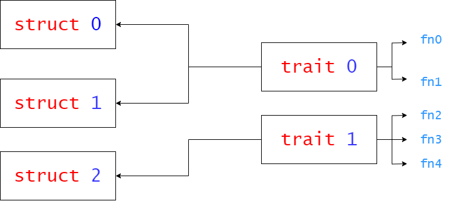

Rust的核心——所有权：一个变量在任意时刻，只能拥有一个可变引用或任意数量的不可变引用之一
学习链接：Rust 程序设计语言
作用域
-
Rust 中的每一个值都有一个 所有者（owner）
-
值在任一时刻有且只有一个所有者
-
当所有者（变量）离开作用域，这个值将被丢弃
-
所有权举例
fn main() { let s = String::from("hello"); // s 进入作用域 takes_ownership(s); // s 的值移动到函数里 ... // ... 所以到这里不再有效里 let x = 5; // x 进入作用域 makes_copy(x); // x 应该移动函数里， // 但 i32 是 Copy 的， // 所以在后面可继续使用 x } // 这里，x 先移出了作用域，然后是 s。但因为 s 的值已被移走， // 没有特殊之处 fn takes_ownership(some_string: String) { // some_string 进入作用域 println!("{}", some_string); } // 这里，some_string 移出作用域并调用 `drop` 方法。 // 占用的内存被释放 fn makes_copy(some_integer: i32) { // some_integer 进入作用域 println!("{}", some_integer); } // 这里，some_integer 移出作用域。没有特殊之处 -
变量的所有权总是遵循相同的模式：将值赋给另一个变量时移动它。当持有堆中数据值的变量离开作用域时，其值将通过 drop 被清理掉，除非数据被移动为另一个变量所有
引用
-
rust的引用默认为常引用，可变引用前面需要加入
&mut -
无论是调用函数传参数，引用符都需要
-
Rust 也会将可变引用强转为不可变引用。但是反之是 不可能 的：不可变引用永远也不能强转为可变引用
-
在任意给定时刻，只能拥有一个可变引用或任意数量的不可变引用 之一（而不是两者）
-
引用必须总是有效的
-
引用举例
fn plus1(x: &mut i32) { *x = *x + 1; }
枚举和模式匹配
- if let 是 match 的一个语法糖，它当值匹配某一模式时执行代码而忽略所有其他值
模块树
-
模块树应该定义在 src/lib.rs 中
-
use的使用规范，晰地表明函数不是在本地定义的，同时使完整路径的重复度最小化
-
正确✅
use crate::a::b; pub fn Some_function() { b::fn1(); } -
错误❎
use crate::a::b::fn1; pub fn Some_function() { fn1(); }
-
模块
- mod 关键字声明了模块，而 Rust 会在与模块同名的文件中查找模块的代码。
泛型
- Rust 会将每种情况下的泛型代码编译为具体类型，使用泛型没有运行时开销。当代码运行时，它的执行效率就跟好像手写每个具体定义的重复代码一样。这个单态化过程正是 Rust 泛型在运行时极其高效的原因。
trait

-
特征。类似于c的基类，声明函数但可以不实现，它用来定义一组可以被不同类型实现的行为
-
好用的
where定语从句fn some_function<T, U>(t: &T, u: &U) -> i32 where T: Display + Clone, U: Clone + Debug, -
调用关系，如果一个
struct钟实现两个同名函数，需要使用类似trait1::fn1(&struct0_varible_name);方法调用 -
对于3的歧义情况，使用 完全限定语法是调用函数时最为明确的方式，例如
<struct0 as trait1>::fn1()
生命周期 lifetime
-
举例
fn main() { let r; // ---------+-- 'a // | { // | let x = 5; // -+-- 'b | r = &x; // | | } // -+ | // | println!("r: {r}"); // | } // ---------+- 这里将 r 的生命周期标记为 'a 并将 x 的生命周期标记为 'b。
-
Rust 编译器有一个 借用检查器（borrow checker），它比较作用域来确保所有的借用都是有效的
-
生命周期语法是用于将函数的多个参数与其返回值的生命周期进行关联的
-
也可以定义包含引用的结构体，不过这需要为结构体定义中的每一个引用添加生命周期注解
-
这里有一种特殊的生命周期值得讨论：'static，其生命周期能够存活于整个程序期间。所有的字符串字面值都拥有 'static 生命周期
测试
- 为了编写集成测试，需要在项目根目录创建一个 tests 目录，与 src 同级
闭包
unwrap_or_else是 Rust 标准库中Option和Result类型的方法，用于处理可能为空的值（Option）或可能出错的值（Result）。它允许你在Option为None或Result为Err时提供一个备用值或执行一个闭包。- 闭包（Closure）是 Rust 中的一种匿名函数，可以捕获其环境中的变量。
- 闭包与函数的区别
- 捕获环境：闭包可以捕获其定义环境中的变量，而函数不能。
- 类型推断：闭包可以自动推断参数和返回值的类型，而函数需要显式声明类型。
- 灵活性：闭包可以存储在变量中，作为参数传递给其他函数，甚至可以作为返回值。
- 同一闭包不能使用不同类型的参数，否则就会得到类型错误
- 闭包定义时，它会捕获变量的可变引用（如果这个闭包会改变变量的话）
- 调用闭包时，如果变量所有权被夺走，那么变量就不在闭包环境中，相当于只能调用一次闭包，需要注意这种情况
迭代器
-
需要注意的是，从 next 调用中获取的值是对 vector 中值的不可变引用。iter 方法生成一个不可变引用的迭代器
-
如果我们需要一个获取 变量 所有权并返回拥有所有权的迭代器，则可以调用 into_iter 而不是 iter
-
使用 into_iter 会获取所有权并消耗，返回一个拥有所有权的迭代器，适用于需要转移所有权的情况
-
使用 iter 会借用 变量，返回一个不可变引用的迭代器，适用于不需要转移所有权的情况
let v1 = vec![1, 2, 3]; let v2: Vec<_> = v1.into_iter().filter(|x/*&i32*/| *x == 2).collect(); //------------------------------------------------------------------- let v1 = vec![1, 2, 3]; let v2: Vec<_> = v1.iter().filter(|x/*&&i32*/| x == 2).collect(); -
如果我们希望迭代可变引用，可以调用 iter_mut 而不是 iter
并行编程
- 所有权规则在消息传递中扮演了重要角色，其有助于我们编写安全的并发代码。防止并发编程中的错误是在 Rust 程序中考虑所有权的一大优势。
智能指针
-
Rc<T>允许相同数据有多个所有者；Box<T>和RefCell<T>有单一所有者。 -
Box<T>允许在编译时执行不可变或可变借用检查；Rc<T>仅允许在编译时执行不可变借用检查；RefCell<T>允许在运行时执行不可变或可变借用检查。 -
使用
RefCell<T>能够在外部值被认为是不可变的情况下修改内部值 -
因为
RefCell<T>允许在运行时执行可变借用检查，所以我们可以在即便RefCell<T>自身是不可变的情况下修改其内部的值，例如： -
Cow类型是一个智能指针，它可以指向一个值，这个值可以是引用，也可以是具体的值。Cow是clone on write的缩写，它的主要作用是延迟克隆，只有在需要修改时才会真正克隆数据pub trait Base { fn send(&self, msg: &str); } //... pub sturct Instance { messages: Vec<String>, } impl Base for Instance { fn send(&self, message: &str) { // Wrong!! 不能更改可变引用的变量 // self.messages.push(String::from(message)); // Right!! 使用RefCell强行更改 self.messages.borrow_mut().push(String::from(message)); } } -
注意
Rc<T>只能用于单线程场景 -
注意
RefCell<T>不能用于多线程代码！ -
避免出现引用循环
并发
Mutex<T>同RefCall<T>都提供了内部可变性，在变量是不可变的情况下修改其值
特征对象
dyn x表示一个类型，并且这个类型实现了x特征，x是个trait
模式匹配
-
..模式会忽略模式中剩余的任何没有显式匹配的值部分，但不能是有歧义的使用，例如fn main() { let numbers = (2, 4, 8, 16, 32); match numbers { (first, .., last) => { println!("Some numbers: {first}, {last}"); } // Wrong ! // (.., second, ..) => { // println!("Some numbers: {second}"); // } } } -
限制形参范围可以用，
@后面跟一个范围
不安全代码
-
Rust 支持全局变量，在 Rust 中又被称为 静态（static）变量
-
访问和修改可变静态变量都是 不安全 的，需要使用
unsafe块 -
unsafe举例
static mut COUNTER: u32 = 0; fn add_to_count(inc: u32) { unsafe { COUNTER += inc; } }
其他
-
使用
.collect()时一定要明确指出变量类型let v2 = v1.iter().map(|x| x + 1).collect(); ^^ ------- type must be known at this point -
一旦获取了锁，就可以将返回值视为一个其内部数据的可变引用了
-
通过在名字前以一个 _ 开头来忽略未使用的变量
-
范围表示
a..=b -
类型别名
type thunk = Box<dyn Fn() + Send + 'static>; -
asm!用来内联汇编
-
lazy_static! 是一个宏，用于在 Rust 中创建惰性静态变量。惰性静态变量在第一次访问时初始化，而不是在程序启动时初始化。这对于需要在运行时进行复杂初始化的静态变量非常有用。
-
ptr的 add(1) 方法将指针向前移动一个 usize 的位置
-
在 Rust 中，{:#x} 是一种格式化字符串的语法，用于以十六进制格式打印数值，并带有前缀 0x
-
#[no_mangle] 是一个属性（attribute），用于告诉编译器不要对函数名进行名称重整（name mangling）
-
在 Rust 中，感叹号 ! 表示这个函数是一个发散函数（diverging function），即它永远不会返回